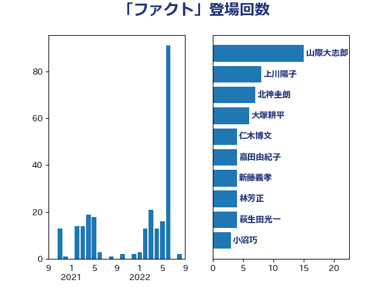

単語「ファクト」

| 山際大志郎 | 自由民主党 | 15 回 |
| 上川陽子 | 自由民主党 | 8 回 |
| 北神圭朗 | 無所属 | 7 回 |
| 大塚耕平 | 国民民主党 | 6 回 |
| 仁木博文 | 無所属 | 4 回 |
| 嘉田由紀子 | 無所属 | 4 回 |
| 新藤義孝 | 自由民主党 | 4 回 |
| 林芳正 | 自由民主党 | 4 回 |
| 萩生田光一 | 自由民主党 | 4 回 |
| 小沼巧 | 立憲民主党 | 3 回 |
| 森山浩行 | 立憲民主党 | 3 回 |
| 浅野哲 | 国民民主党 | 3 回 |
| 田村憲久 | 自由民主党 | 3 回 |
| 赤嶺政賢 | 日本共産党 | 3 回 |
| 三原じゅん子 | 自由民主党 | 2 回 |
| 伊波洋一 | 無所属 | 2 回 |
| 国光あやの | 自由民主党 | 2 回 |
| 小泉進次郎 | 自由民主党 | 2 回 |
| 小野寺五典 | 自由民主党 | 2 回 |
| 岡本三成 | 公明党 | 2 回 |
| 川合孝典 | 国民民主党 | 2 回 |
| 東徹 | 日本維新の会 | 2 回 |
| 柚木道義 | 立憲民主党 | 2 回 |
| 柴田巧 | 日本維新の会 | 2 回 |
| 牧山ひろえ | 立憲民主党 | 2 回 |
| 石井苗子 | 日本維新の会 | 2 回 |
| 福山哲郎 | 立憲民主党 | 2 回 |
| 穀田恵二 | 日本共産党 | 2 回 |
| 三木圭恵 | 日本維新の会 | 1 回 |
| 中谷一馬 | 立憲民主党 | 1 回 |
| 伊藤岳 | 日本共産党 | 1 回 |
| 安達澄 | 無所属 | 1 回 |
| 小野泰輔 | 日本維新の会 | 1 回 |
| 山下貴司 | 自由民主党 | 1 回 |
| 山井和則 | 立憲民主党 | 1 回 |
| 山岸一生 | 立憲民主党 | 1 回 |
| 岸信夫 | 自由民主党 | 1 回 |
| 川田龍平 | 立憲民主党 | 1 回 |
| 掘井健智 | 日本維新の会 | 1 回 |
| 有村治子 | 自由民主党 | 1 回 |
| 沢田良 | 日本維新の会 | 1 回 |
| 浦野靖人 | 日本維新の会 | 1 回 |
| 源馬謙太郎 | 立憲民主党 | 1 回 |
| 熊谷裕人 | 立憲民主党 | 1 回 |
| 田嶋要 | 立憲民主党 | 1 回 |
| 秋本真利 | 自由民主党 | 1 回 |
| 芳賀道也 | 国民民主党 | 1 回 |
| 若松謙維 | 公明党 | 1 回 |
| 藤田文武 | 日本維新の会 | 1 回 |
| 足立康史 | 日本維新の会 | 1 回 |
| 辻元清美 | 立憲民主党 | 1 回 |
| 道下大樹 | 立憲民主党 | 1 回 |
| 鈴木英敬 | 自由民主党 | 1 回 |
| 阿部知子 | 立憲民主党 | 1 回 |